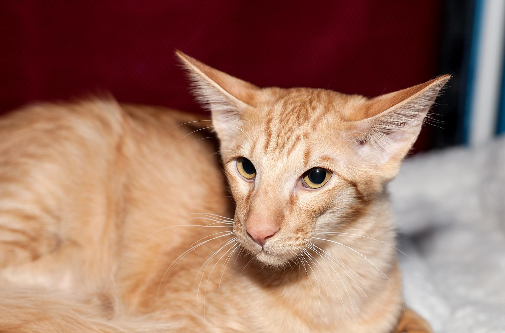

Son descendientes de gatos orientales de pelo corto y balineses que criadores ingleses cruzaron en los años 60. Es por ello que a veces se le considera o bien una variedad de color dentro de la raza balinesa, o bien como una subraza de pelo semilargo de los gatos orientales. Sin embargo, se cree que el origen del gato oriental de pelo largo puede ser más remoto, ya que en 1890 se dataron especímenes que aún siendo catalogados como gatos angora distaban mucho de los estándares de la raza. Posteriormente pasaron a denominarlos angora británicos, ya que no eran iguales que los turcos, aunque en esos tiempos la única raza de pelo largo oficialmente registrada era la persa.
Dentro de los gatos de tamaño mediano, ya que su peso suele oscilar entre los 4 y los 6 kilogramos. Su esperanza de vida por norma general es de entre 14 y 18 años. Su cuerpo es esbelto y tubular, de extremidades largas y flexibles, a la par que fuertes y musculosas. La cola es larga y delgada, estrechándose hacia la punta de la misma y con pelos que semejan a una especie de plumaje. La cabeza del gato javanés es triangular, larga y estrecha, con un hocico fino en forma de cuña. Sus ojos son almendrados, con inclinación hacia el hocico, no demasiado separados, de un color profundo acorde al manto, aunque el más destacado es el vívido azul. Algo que caracteriza al gato oriental de pelo largo es sus singulares orejas, ya que estas son inusualmente largas, anchas en la base pero marcadamente punteadas en los extremos, inclinándose ligeramente hacia los laterales de la cabeza. Por último, su pelo es semilargo, denso y suave, siendo más largo en cola y cuello.

Su carácter afable y entrañable. Se trata de gatos cariñosos y comunicativos, que nos harán saber lo que necesitan en cada momento, llegando a mantener cuasi conversaciones con sus adorables maullidos sostenidos y su penetrante mirada. De una marcada inteligencia, será fácil educar a un gato mandarín, e incluso enseñarle divertidos trucos para el deleite de todos. Además, se encuentra entre las razas de gato más aconsejables para vivir en un piso. En definitiva, dentro del temperamento del gato oriental de pelo largo destacamos que se trata de un felino flexible que se adapta fácilmente a diversos entornos. Es una elección excelente como compañero tanto de niños como de ancianos, pues, siempre que la relación entre ambas partes se base en el entendimiento y el respeto mutuo, podrán disfrutar de grandes ratos de juegos y cariños.

Necesitará cepillados frecuentes para evitar las molestas bolas de pelo. Para ayudarlo con esto, además, podemos utilizar productos que eviten su formación o faciliten su evacuación si estas ya están presentes. El cepillado será sencillo, ya que carece de capa lanosa en la base del pelaje, la cual sí está presente en otras razas como el gato siberiano, es por ello que su pelo no se enreda y requiere menos esfuerzo para su mantenimiento. Debido a que es un felino que adora salir al exterior y gastar la energía que derrocha, quizá no es el más apropiado para vivir en un apartamento pequeño, a no ser que le proporcionemos las horas de ejercicio y juego suficientes para mantenerlo saludable y tranquilo. A su vez, como en todas las razas felinas, hemos de mantener sus uñas, dientes, pelaje, ojos y oídos limpios y vigilados para detectar posibles afecciones de forma precoz, evitando complicaciones, así como proporcionarles una alimentación sana y equilibrada para garantizar los mejores cuidados a nuestro gato oriental de pelo largo.

Es un gato sano y fuerte, sin embargo comparte enfermedades propias de los siameses o razas similares, como la protuberancia del esternón craneal o la fibroelastosis endocárdica, que consiste en un engrosamiento difuso del endocardio ventricular izquierdo. Debido a que carece de capa lanosa que lo aísle del frío y a que, a la vez, gusta de pasar tiempo en el exterior, hemos de tener en cuenta que es una raza más sensible al frío y por tanto tendremos que tener cuidado, ya que puede padecer resfriados y enfermedades respiratorias con mayor facilidad que otras razas de gatos.